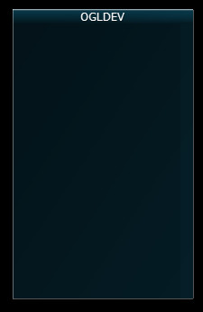
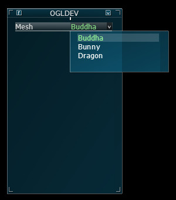
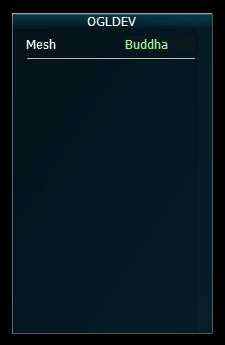
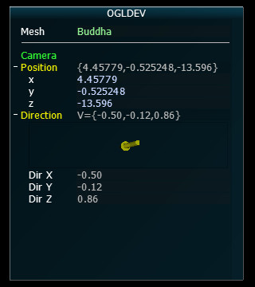
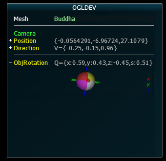
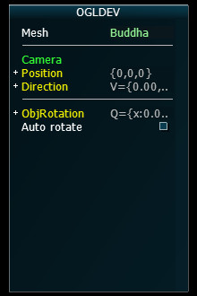

Background
In this tutorial we are going to leave 3D for a while and focus on adding some practical value to our programs. We will learn how to integrate a user interface library into our code which will help in configuring the various values that interest us in the tutorials. The library that we will use is called Ant Tweak Bar (a.k.a ATB) which is hosted at anttweakbar.sourceforge.net. There are many options available and if you do some research on the subject you will find a lot of discussions and opinions on the matter. In addition to OpenGL ATB also supports DirectX 9/10/11 so if you want your UI to be portable this is a good advantage. I found it to be very useful and easy to learn. I hope you will too. So let's jump right in.
Installation
The first thing we need to do is to install ATB. You can grab the zip file which contains almost everything you need or use a copy of the files that I provide along with the tutorials source package. If you decide to go with the official package simply grab it from here, unzip it somewhere and grab AntTweakBar.h from the include directory and copy it where your project sees it. On Linux I recommend putting it in /usr/local/include. In the tutorials source package this file is available under Include/ATB.
Now for the libraries. If you are using Windows this is very easy. The official zip file contains a lib directory with AntTweakBar.dll and AntTweakBar.lib (there is also a matching couple for 64 bits). You will need to link your project to the lib file and when you run the executable have the dll in the local directory or in Windows\System32. On Linux you will need to go into the src directory and type make to build the libraries. The result will be libAntTweakBar.a, libAntTweakBar.so and libAntTweakBar.so.1. I recommend you copy these into /usr/local/lib to make them available from everywhere. The tutorials source packages contains the Windows libraries in Windows/ogldev/Debug and the Linux binaries in Lib (so you don't need to build them).
Integration
In order to use ATB you will need to include the AntTweakBar.h in your source code:
If you are using the Netbeans project that I provide then the Include/ATB directory which
contains this header is already in the include path. If not then make sure your build system
sees it.
#include <AntTweakBar.h>
To link against the libraries:
- Windows: add the AntTweakBar.lib to your Visual Studio project
- Linux: add '-lAntTweakBar' to the build command and make sure the Linux binaries are in /usr/local/lib
Initialization
In order to initialize ATB you need to call:
TwInit(TW_OPENGL, NULL);
or in case you want to initialize the GL context for core profile:
TwInit(TW_OPENGL_CORE, NULL);
For the tutorials series I created a class called ATB which encapsulates some
of the functionality of the library and added some stuff to make it easier for integration.
You can initialize ATB via that class using a code similar to this:
ATB atb;
if (!m_atb.Init()) {
// error
return false;
}
Create a tweak bar
You need to create at least one tweak bar which is basically a window with widgets
that ATB provides to tweak your application:
The string in the parenthesis is just a way to name the tweak bar.
TwBar *bar = TwNewBar("OGLDEV");
Draw the tweak bar
In order for the tweak bar to appear in your OpenGL window there must be a call present
to the TwDraw() function in the render look. The ATB website provides the following
generic render loop as an example:
I placed a call to TwDraw() in the beginning of OgldevBackendSwapBuffers() (ogldev_backend.cpp:97).
This function is called at the end of every main render function and is a good place
to integrate TwDraw() into the framework.
// main loop
while( ... )
{
// clear the frame buffer
// update view and camera
// update your scene
// draw your scene
TwDraw(); // draw the tweak bar(s)
// present/swap the frame buffer
} // end of main loop
Adding widgets
The above is everything you need to basically have ATB up and running in your application.
Your ATB bar should now look like this:

From now on what we need to do is to add widgets and link them to our application
so that they can be used to tweak parameters of our code.
Let's add a drop down box. In this tutorial I will use it to select the mesh to
be displayed. We need to use the TwEnumVal structure provided by ATB in order to create
a list of available items in the drop down box. That structure is made of pairs of integer
and a char array. The integer will be used as an identifier for the drop down item and the
char array is the name to be displayed. Once the item list is created as an array of TwEnumVal
structs we create a TwType object using the TwDefineEnum function. TwType is an enum of a few
parameter types that ATB understands (color, vectors, etc) but we can add user defined types
to support our specific needs. Once our TwType is ready we can use TwAddVarRW to link it
to the tweak bar. TwAddVarRW() also takes an address of an integer where ATB will place
the current selection in the drop down box. We can then use that integer to change stuff
in our application (the mesh to be displayed in our case).
The result should look like this:
// Create an internal enum to name the meshes
typedef enum { BUDDHA, BUNNY, DRAGON } MESH_TYPE;
// A variable for the current selection - will be updated by ATB
MESH_TYPE m_currentMesh = BUDDHA;
// Array of drop down items
TwEnumVal Meshes[] = { {BUDDHA, "Buddha"}, {BUNNY, "Bunny"}, {DRAGON, "Dragon"}};
// ATB identifier for the array
TwType MeshTwType = TwDefineEnum("MeshType", Meshes, 3);
// Link it to the tweak bar
TwAddVarRW(bar, "Mesh", MeshTwType, &m_currentMesh, NULL);

We can add a seperator using the following line:
Now we have:
// The second parameter is an optional name
TwAddSeparator(bar, "", NULL);

Let's see how we can link our camera so that its position and direction will always
be displayed. Until now you are probably already used to printing the current
camera parameters so that they can be reused later but displaying them in the UI
is much nicer. To make the code reusable I've added the function AddToATB() to the camera
class. It contains three calls to ATB functions. The first call just uses TwAddButton()
in order to add a string to the tweak bar. TwAddButton() can do much more and we will see
an example later on. Then we have TwAddVarRW() that adds a read/write variable and
TwAddVarRO() that adds a read-only variable. The read/write variable we use here
is simply the position of the camera and the UI can be used to modify this so and
have it reflected in the actual application. Surprisingly, ATB does no provide an
a internal TwType for an array of three floats so I created one to be used by
the framework:
(ogldev_atb.cpp:38)
We can now use TW_TYPE_OGLDEV_VECTOR3F whenever we want to add a widget to tweak a
vector of 3 floats. Here's the complete AddToATB() function:
TwStructMember Vector3fMembers[] = {
{ "x", TW_TYPE_FLOAT, offsetof(Vector3f, x), "" },
{ "y", TW_TYPE_FLOAT, offsetof(Vector3f, y), "" },
{ "z", TW_TYPE_FLOAT, offsetof(Vector3f, z), "" }
};
TW_TYPE_OGLDEV_VECTOR3F = TwDefineStruct("Vector3f", Vector3fMembers, 3, sizeof(Vector3f), NULL, NULL);
We have use the provided TW_TYPE_DIR3F as the parameter type that displays an array
of 3 floats using an arrow. Note the addition of 'axisz=-z' as the last parameter
of TwAddVarRO(). Many ATB functions take a string of options in the last parameter. This allows
modifying the internal behavior of the function. axisz is used to change from right handed system (ATB default)
to left handed system (OGLDEV default). There's a lot of additional options available that
I simply cannot cover. You can find them here.
void Camera::AddToATB(TwBar* bar)
{
TwAddButton(bar, "Camera", NULL, NULL, "");
TwAddVarRW(bar, "Position", TW_TYPE_OGLDEV_VECTOR3F, (void*)&m_pos, NULL);
TwAddVarRO(bar, "Direction", TW_TYPE_DIR3F, &m_target, " axisz=-z ");
}
Here's how the tweak bar looks with the camera added:

You are probably spending a lot of time playing with the orientation of your meshes. Let's add
something to the tweak bar to simplify that. The solution is a visual quaternion that
can be used to set the rotation of a mesh. We start by adding a local Quaternion variable (see ogldev_math_3d.h for
the definition of that struct):
We then link the quaternion variable to the tweak bar using the parameter type TW_TYPE_QUAT4F:
Quaternion g_Rotation = Quaternion(0.0f, 0.0f, 0.0f, 0.0f);
Again, we need to change from right handed to left handed system. Finally the quaternion
is converted to degrees:
TwAddVarRW(bar, "ObjRotation", TW_TYPE_QUAT4F, &g_Rotation, " axisz=-z ");
The rotation vector can now be used to orient the mesh and generate the WVP matrix for it:
m_mesh[m_currentMesh].GetOrientation().m_rotation = g_Rotation.ToDegrees();
Our tweak bar now looks like this:
m_pipeline.Orient(m_mesh[m_currentMesh].GetOrientation());

Now let's add a check box. We will use the check box to toggle between automatic
rotation of the mesh around the Y-axis and manual rotation (using the quaternion we
saw earlier). First we make an ATB call to add a button:
The third parameter is a callback function which is triggered when the check box
is clicked and the fourth parameter is a value to be transfered as a parameter to
the callback. I don't need it here so I've used NULL.
TwAddButton(bar, "AutoRotate", AutoRotateCB, NULL, " label='Auto rotate' ");
You can now use gAutoRotate to toggle between automatic and manual rotations.
bool gAutoRotate = false;
void TW_CALL AutoRotateCB(void *p)
{
gAutoRotate = !gAutoRotate;
}
Here's how the tweak bar now looks:
